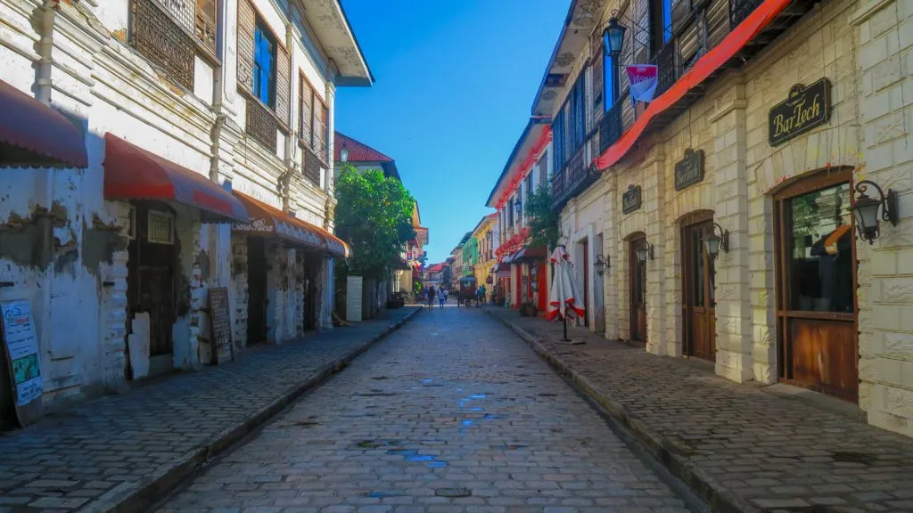

About Vigan
Vigan was spared from the devastation of war by a beautiful love tale between a Japanese and a Bigueña (term for a Vigan woman).
A Japanese military commander fell in love with a Bigueña, and since he didn't want his loved one to be left suffering and
having a horrible life as a result of war's destruction, he abandoned the Japanese command for the sake of love.
Isn't it romantic? That is why the historic homes of Vigan are still intact and a romance has been preserved.
UNESCO World Heritage
It is considered a UNESCO World Heritage Site and is among a number of
Spanish colonial towns preserved in the Philippines, having old
structures still intact.
Geography
Vigan is located 120 23’ 15’’ east longitude and 17 34’ 30’’ north latitude.
It can be found in the upper part of the island of Luzon, marking it as the
capital of the province of Ilocos Sur.
Transportation
Transport modes within Vigan are completely land-based. Public vehicles include jeepneys,
tricycles, vans-for-hire, and calesas while buses, mini-buses, and other jeepneys
offer transportation to and from the city.

Calle Crisologo owes its name to the illustrious Ilocano poet, writer, and playwright Governor Marcelino “Mena” Crisologo. Previously, the street was called Calle de Escolta de Vigan, whose residents were mostly families who profited from the galleon trade that included Ilocos as a key port. When Governor Crisologo died in 1927, the street was renamed Calle Crisologo in his honor.
The Syquia Mansion is a wonderful example of bahay na bato architecture prevalent during the later Spanish Colonial Era. The typical structure consisted of a ground floor made of stone or brick and mortar with the upper floors of wood. No cement, no hollow blocks, no steel bars. No blueprints either. This mansion was built using a craftsman’s expert eye and traditional building materials.
Crisologo Museum is an ancestral house turned into a museum by the Crisologos, who happens to be one of Vigan’s most prominent political family figure. The museum is a few walks away from the Vigan Cathedral.
It is famous not only because of the family name attached to it but with its wide range of memorabilia as it also houses historical and political remains of what shaped the Ilocos province and the whole Philippines.
Visitors who want to experience the charm of old world Vigan, can seek accommodations at the Villa Angela Heritage House. Located along Quirino Boulevard, this house is typical of those constructed in Vigan in the 1800s. Agapito B. Florendo, a gobernadorcillo, had it built in 1870. The house itself is part of a 2,000 square meter property owned by the prominent Versoza family. They named it after their matriarch, Angela Verzosa Villanueva.

Standing tall atop a small hill is the Bantay Bell Tower, a centuries-old church belfry that has become a favorite among tourists. Located in the municipality of Bantay right next to its local church, the Bantay Bell Tower previously served as a watchtower for the town and for the nearby capital city of Vigan during the Spanish colonial period, protecting both areas from pirates and other enemies.
The Burgos House is one of the historical landmarks in Vigan, a city declared as a UNESCO World Heritage Site. The museum displays material artifacts of the Ilocano, Kankana-ey, and Itneg ethnolinguistic groups. These include wooden plates and bowls, burial coffins and chairs, musical intruments, weaponry, weaving implements, texticles, jars, trade ceramics.
People love white sandy beaches. But have you ever seen a black sandy beach? Perhaps not a lot of people visiting Vigan City in the province of Ilocos Sur are aware that at the edge of the historical town is a roaring, charming beach named after a quiet fishing village on the shores of South China Sea.
The Arce mansion, one of the oldest structures in the country, is a popular tourist spot in Vigan. And the best way to keep up with the history feel of the place is to actually dress like in the old times.
The Arce family has a collection of costumes that consists of the traditional Filipiniana and Barong Tagalog, as well as national costumes of other countries that colonized the Philippines.
The Baluarte Zoo was established by local politician and businessman, Chavit Singson. Singson, who cites his hunting hobby as his motive in setting up Baluarte only considered opening a zoo when his hunting trophy collection grew too big. He thought that a zoo would serve to edify it patrons aside from promoting conservation and protection of endangered species.
Hidden Garden features a restaurant and a cafe in a relaxing setting filled with tropical plants and flowers, carved wooden sculptures, and lots of clay pots. Taste some local delicacies at the restaurant or just walk around the garden past a bonsai corner, an artificial grotto, and a large birdcage housing white cockatoos.